Overview
Cloud Station for Synology NAS is a file-syncing application that lets you easily synchronize files on your Synology NAS with other devices, such as computers or mobile devices (with DS cloud). Install Cloud Station Server on your Synology NAS and Cloud Station Drive on your computer, to automatically sync files stored on your computer to your Synology NAS.
Set up connection between your Synology NAS and your computer
- Go to Package Center, find Cloud Station Server, and then click Install.
- Launch Cloud Station Server.
- In the Overview tab, click the button under Cloud Station Drive to download Cloud Station Drive for your operating system. (You can also download Cloud Station from the Synology Download Center.) 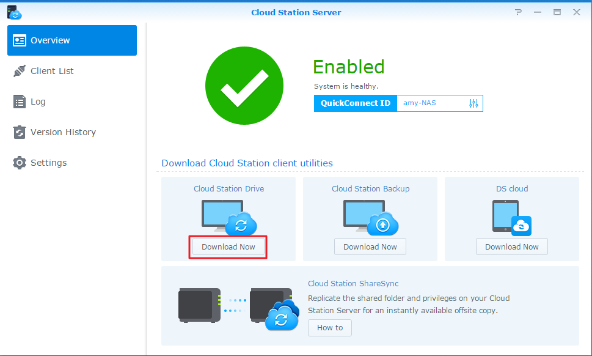
- Launch the installer on your computer and follow the onscreen instructions.
- After installation, run Cloud Station on your computer. Click Start Now. 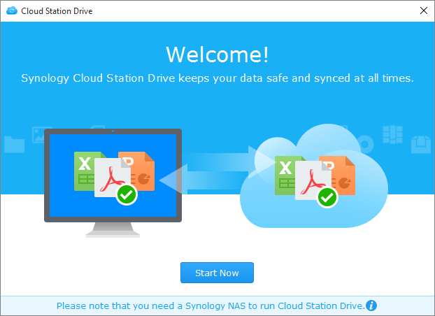
- Enter the address for the Synology NAS running Cloud Station (or QuickConnect ID), username, and password. You can click the search icon on the right to search for IPs within your LAN. Click Next. 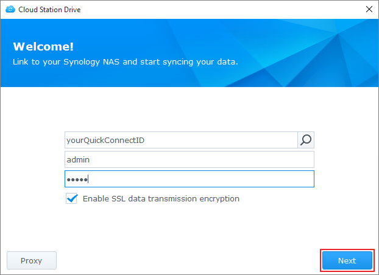
- Select the folders you want synchronized on your Synology NAS and on your computer by clicking the the Edit icons. You can then click Advanced to configure sync settings
- Uncheck any folders you don't want synced. 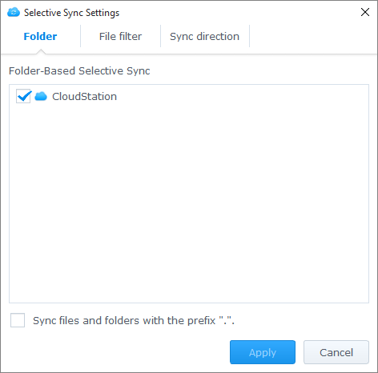
- Set a maximum file size or blacklist filenames or file types so they will not be synced. 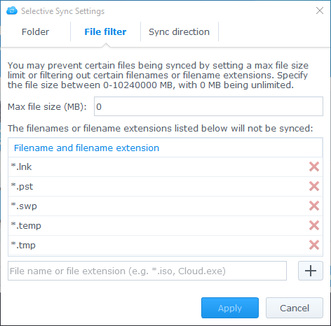
- Select whether to sync bidirectionally, or only download data from your Synology NAS. 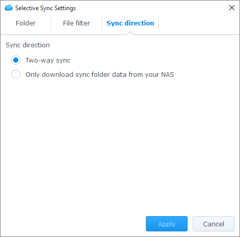
- Click Done to complete setup. 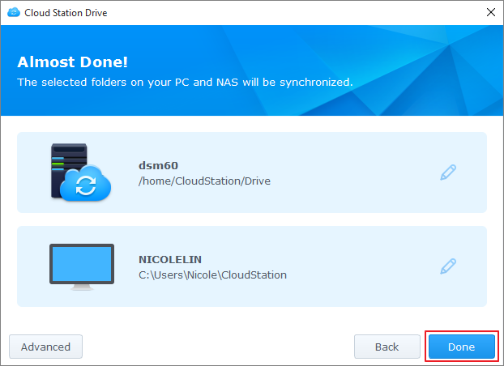
- You can find the Cloud Station icon in your system tray. 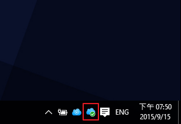
- Click the system tray icon to open the tray menu. Here you can view the progress and status of your files. Here you can view the progress and status of your files. Click Main app to launch Cloud Station. 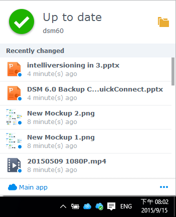
- Upon launch, you will be shown the some tips on how to use Cloud Station. Click the right arrow to see more tips, or click Online tutorials for more information. If you don't need the tips, tick the box next to Don't show this again. 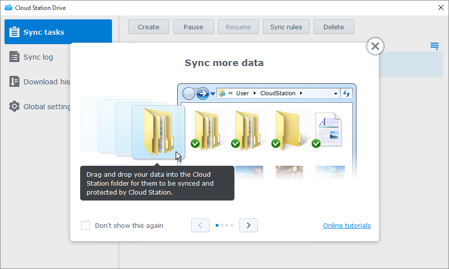
- Now you can manage your sync tasks in Cloud Station Drive. 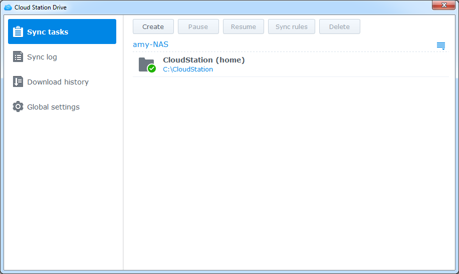
Download a previous version of a synced file
- Click the Cloud Station Drive icon in your system tray and click the folder icon. 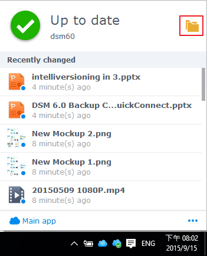
- Right-click your selected file and choose Synology Cloud Station > Browse previous versions.
- Find the version you want to download and click on the download icon. 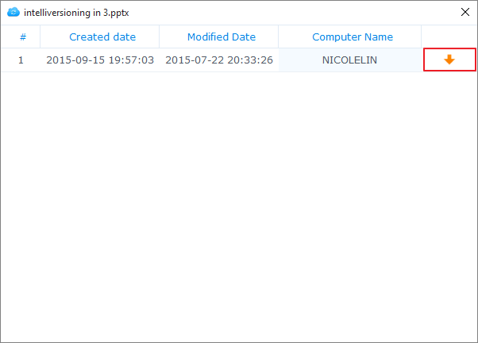

Download or restore a previous version of a synced file on from Cloud Station Server
- Go to Cloud Station Server > Version History and locate the file or folder you wish to restore. 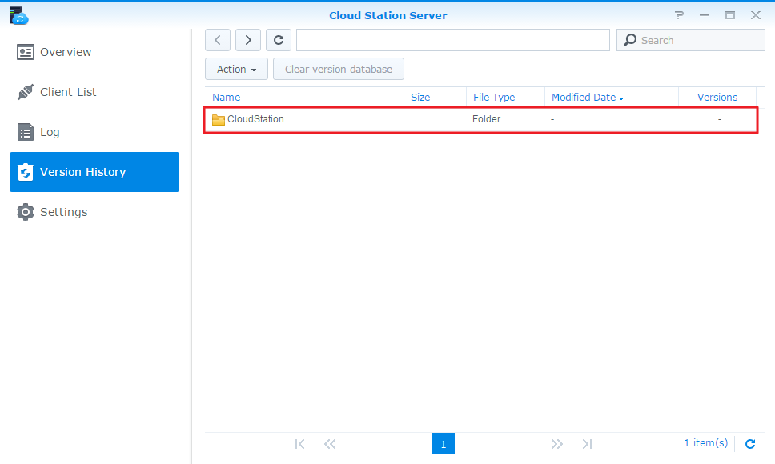
- Select the file you want to retrieve and click Action > Browse previous versions.
- Select the version of the file you want to download and click Download. Or, if you are sure you want the selected version restored, click Restore and it will overwrite your current version. 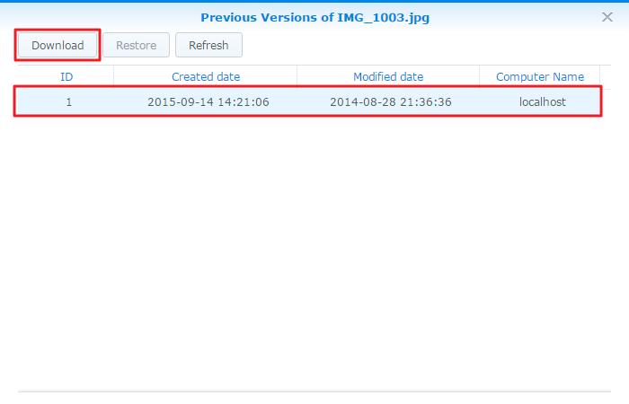

Important notes
- Always keep historical versions in case a file is removed or overwritten by accident.
- In Global Settings, you can configure whether a file removed from your PC will be refetched from your NAS or be deleted on your NAS when relinking takes place.
- Please do not manually copy files from PC to NAS and vice versa. In order for subsequent data synchronization to be efficient, Cloud Station will need to scan each synced file for changes. Thus, it may take a significant amount of time to finish the initial synchronization. The time consumption depends on the quantity of files and the performance of the NAS and PC/Mac. If you are interested in knowing how Cloud Station works, please see our White Paper here.
Sync Data to Your Mobile Devices
DS cloud is available for free on the Apple App Store and Google Play Store. You can also scan the QR code below to download directly.
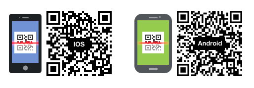